Preparing x-gantry
This set of work instructions is out of date!
What's shown here is for v3.0.5 of the LumenPnP. Instructions for the latest version of x-gantry still need to be written for LumenPnP v3.1.#.
Please note however, the QC Checklist is up to date.
Assemble the x-gantry-linear-axis
Prepare the x-motor-mount
-
Install 2x M5 Hex Nuts into x-motor-mount
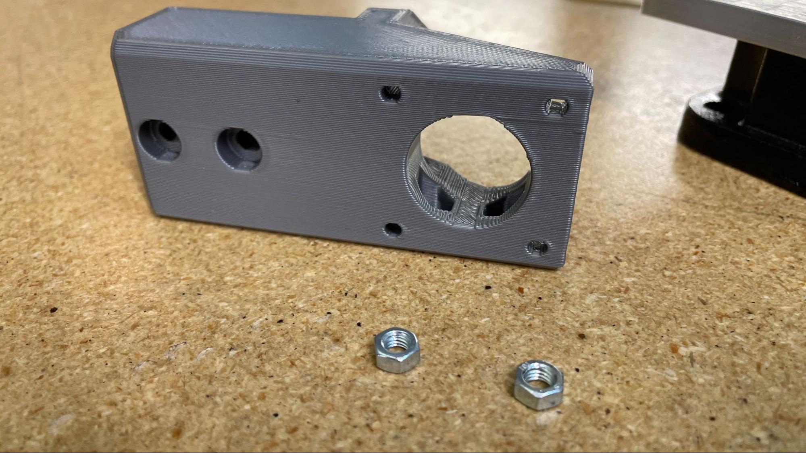
-
Use an M5x16 bolt to align the hex nut with the hex pocket
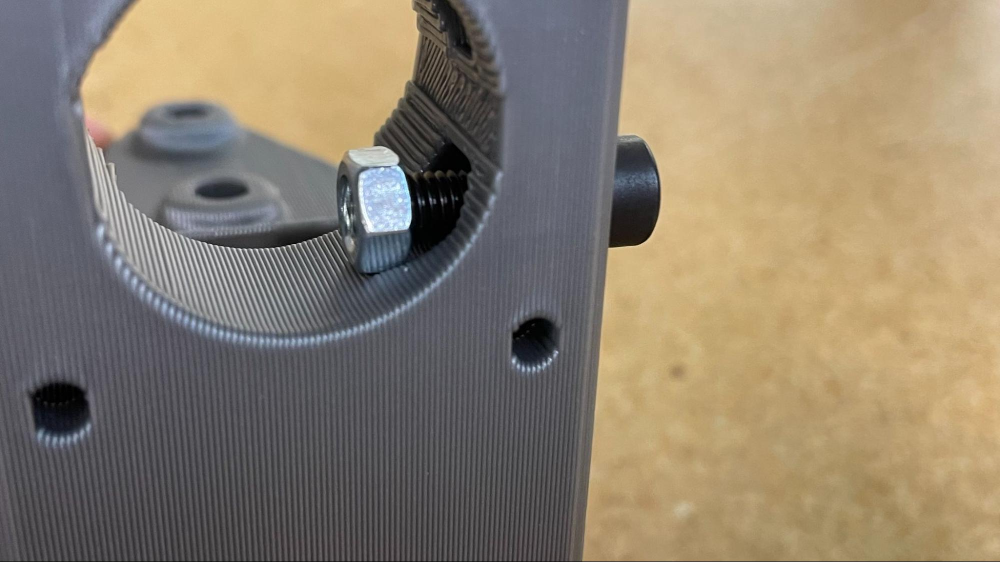
-
Before continuing, add a small drop of Loctite to the side of the hex nut
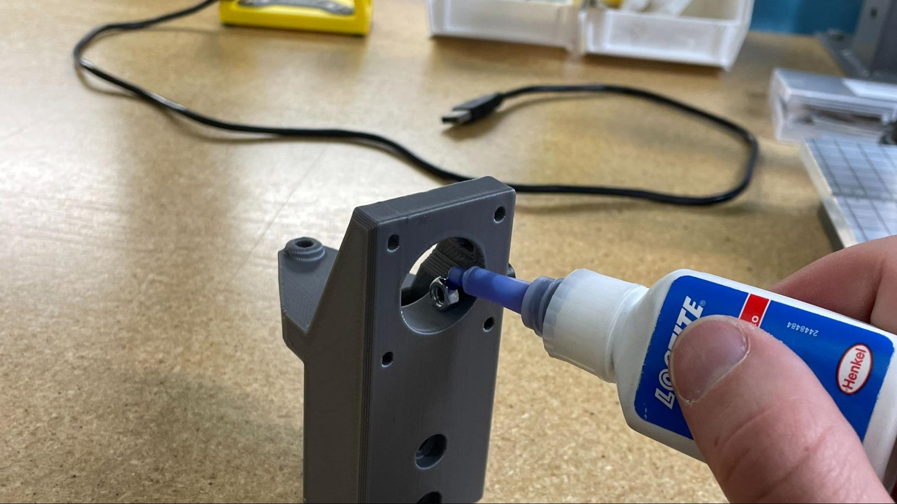
-
You can then proceed to pull the hex nut fully into the hex pocket by tightening the bolt
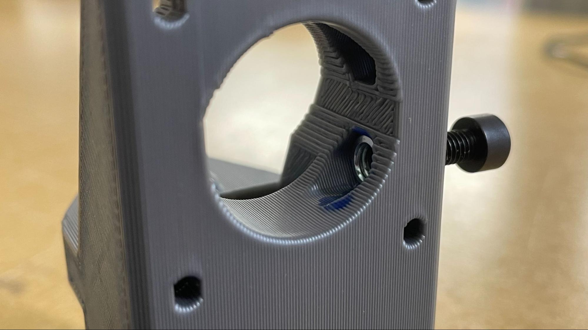
-
Repeat this process for the second hex nut, when finished your x-motor-mount should match the images shown below:
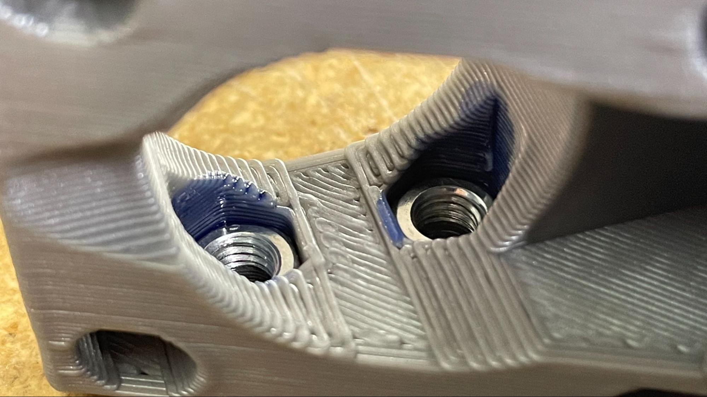
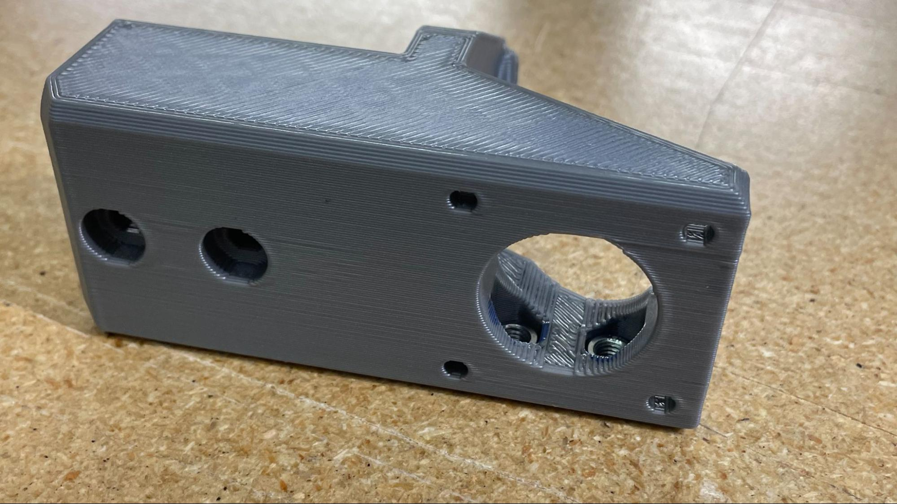
Install NEMA 17 stepper motor onto x-motor-mount
-
Set timing-pulley height on NEMA 17 stepper motor shaft with jig
- The 1st set screw tightened must contact the flat region of the NEMA 17 motor’s shaft
- Tighten both set screws to 0.6 N/M

-
Bolt NEMA 17 motor onto motor mount with 4x M3x8 bolts
- Tighten these bolts to 0.4 N/M
- The motor connector should face towards the 2x pressed in M5 hex nuts when installed

Assemble x-axis tensioner and install onto x-idler mount
-
The pieces you will need are shown below
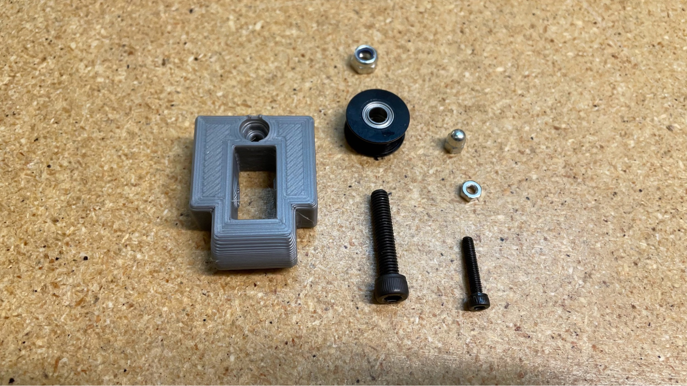
-
Press an M3 hex nut into the belt-tension-arm, followed by an M3x16 bolt
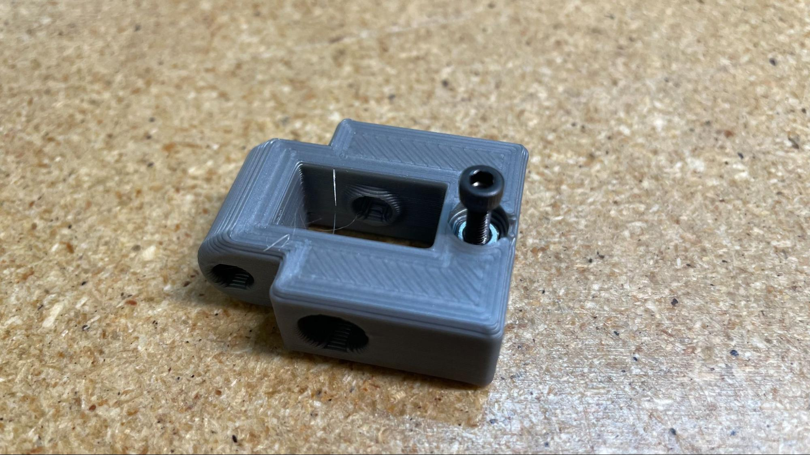
-
Thread the M3x16 bolt all the way through the belt-tension-arm, and then thread an M3 acorn nut onto the ends of the bolt.
-
Tighten the nut onto the bolt with pliers and an Allen wrench!
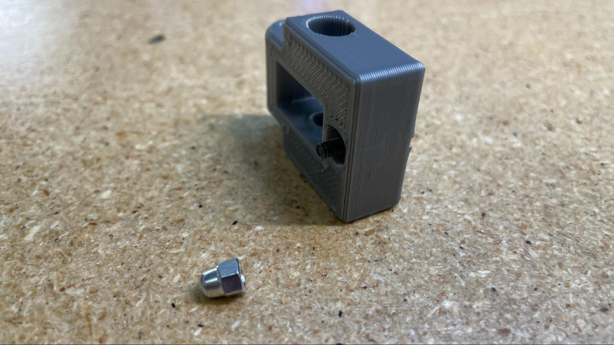
-
-
Install the idler-pulley with an M5x25 bolt and a nyloc M5 hex nut
- Avoid over tightening the bolt, the idler-pulley should be able to spin freely without resistance.
-
Install belt-tension-arm onto x-idler-mount
- Bolt the pieces together at the pivot point on x-idler-mount with an M5x40 bolt and a nyloc M5 hex nut.
- Avoid over tightening the bolt, the belt-tensioner arm should be able to pivot smoothly without much resistance.
- Ensure the belt-tensioner-arm is installed correctly on x-idler-mount (IE not backwards)
-
The acorn nut should be resting against the x-idler mount when installed correctly
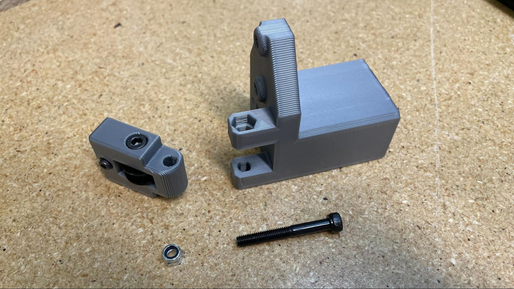
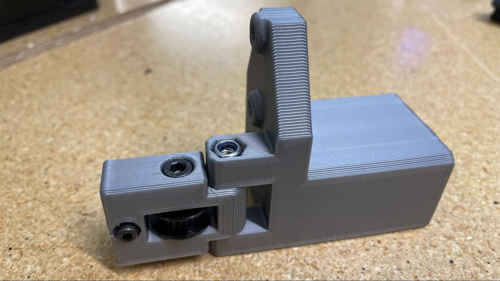
Assemble x-motor-mount and x-idler mount onto alu-extrusion
needs work
Prepare the x-gantry’s toolhead-assembly
Top-camera-assembly preparation
-
Use the top-camera-focus-jig to pre-focus top-cameras
-
Connect top-camera-focus-jig to a laptop and open a native camera viewing application

-
Remove the top-camera lens cap
-
Loosen the set screw found on the side of the lens body that locks the focus

-
Install the top-camera fully into the top-camera-focus-jig, plugging the USB cable into the camera module afterwards

-
In Photobooth, change the selected camera to PnP Top to view the camera feed of the top-camera. The setup should now look like the following image

-
Rotate the camera lens until the live viewport shows the datum board as focused as possible


Camera view before and after focusing shown above
-
Once the camera is focused, tighten the set screw to lock in the adjustments
-
Put a red dot on the camera PCB with a sharpie to denote that the camera has passed testing
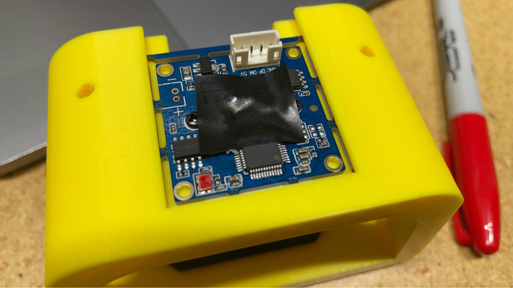
-
Remove the top-camera from the top-camera-focus-jig and immediately replace the lens cap.
Assemble the top-camera-assembly
-
Installing top-ring-light into top-light-mount
- Place the ring light facing downwards into the top-light-mount.
- The LEDs will shine down, and the white plastic wire connector will face upwards.
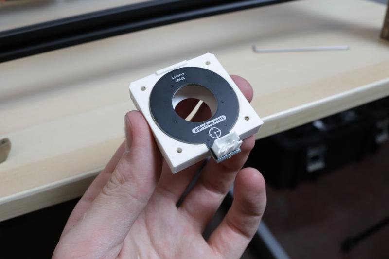
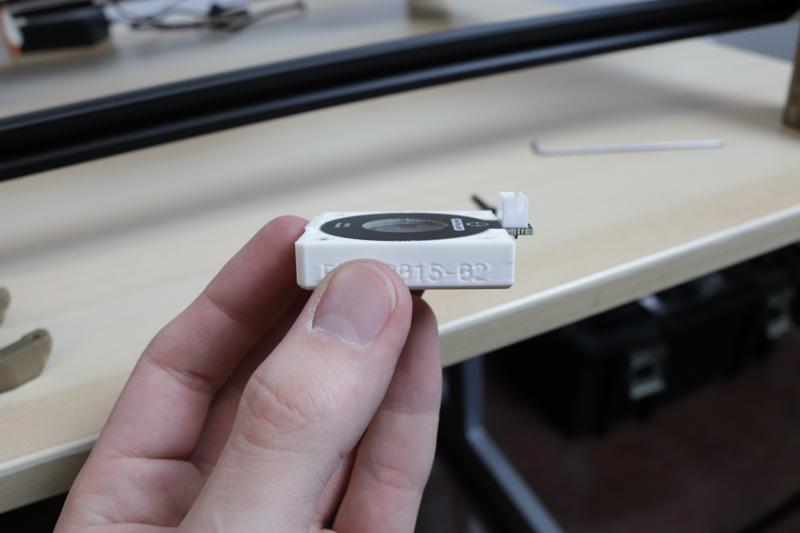
-
Place top-camera-mount above top-light-mount, ensuring that the tab from the top-light-mount fits onto the side opposite the arms on the top-camera
- These two prints will pinch the top ring light in place
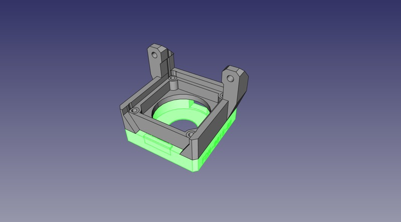
-
Install top-camera into top-camera-mount.
- Make sure the connector on the back side of the camera is between the two arms of the top-camera-mount.
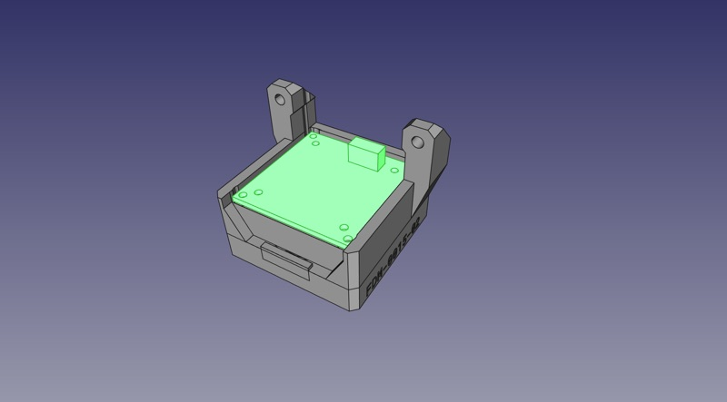
-
Secure the whole stack in place with four M2.5x20mm screws in the outer four holes
- Do not put the screws through the inner holes with metal circles around them
- Tighten the screws enough so that all parts are tightly held together, however be cautious as these screws are threading directly into the plastic
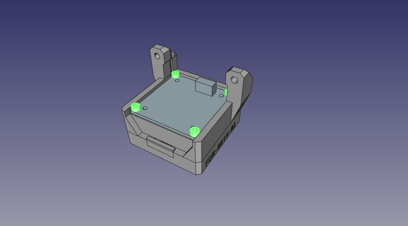
X-gantry-back hex nut installation
-
Insert 2x hex nuts into x-gantry-back for later drag-chain-assembly attachment
-
Add a small amount of Loctite to the sides of the hex nuts to ensure they stay installed in transit to the customer
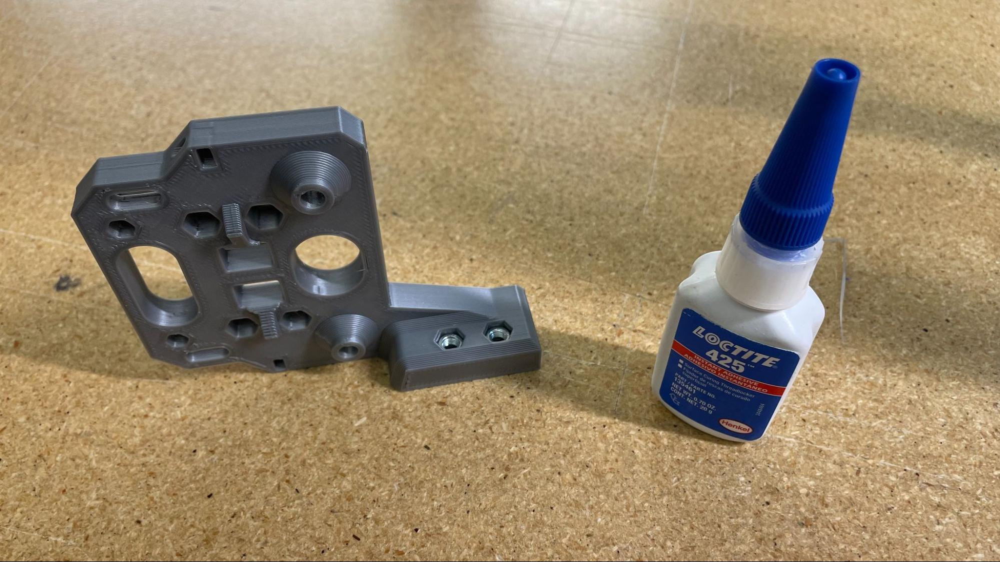
- It is recommended to use a wide tool that can easily press down on the entire hex nut without allowing it to rock. This helps insert the hex nut into the print straight on.
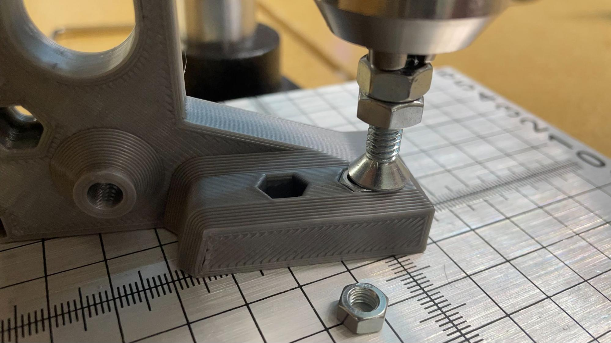
-
However, be sure to switch to a narrow tool that can fully press hex nuts into the pockets
-
Insert 2x backside hex-nuts into x-gantry-back
-
Place the x-gantry-back-nut-plate jig onto the arbor press to hold x-gantry-back in a proper position during the following steps
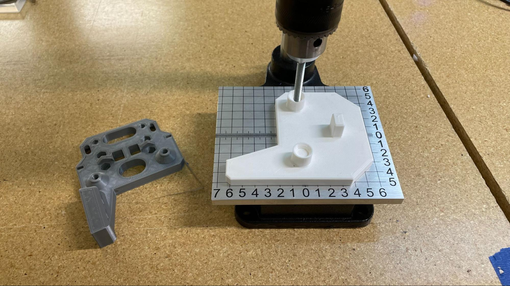
- Press the hex nuts into x-gantry-back until they are flush with the surface
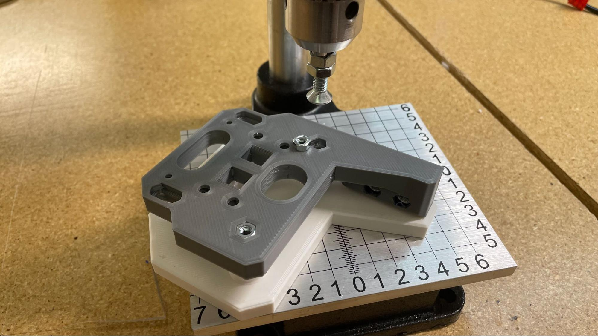
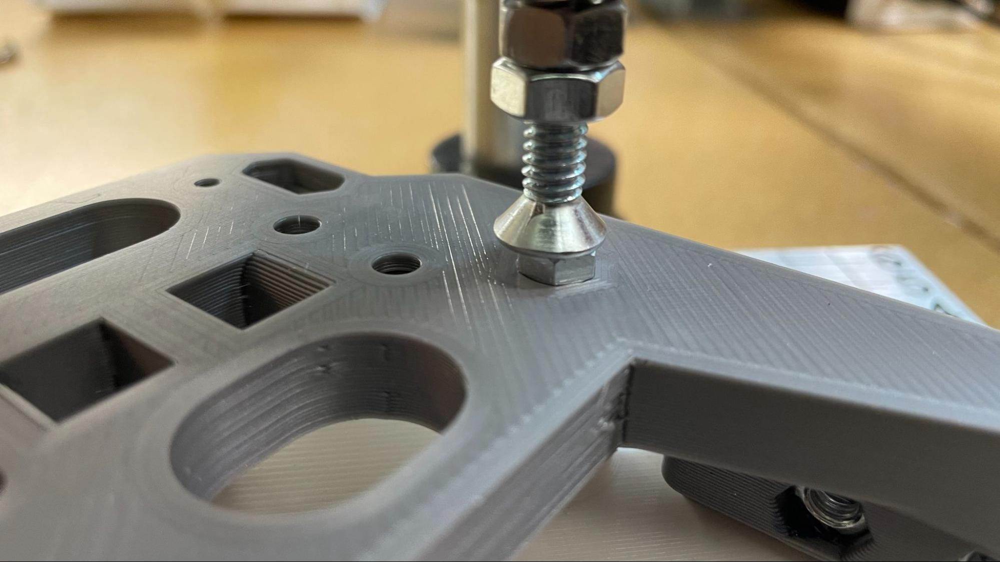
-
The 2x adjustable sliding M5 hex nuts are not installed at this time because they can be loose and it would be inappropriate to fix them in place with Loctite
-
Insert all the remaining top-side hex nuts into x-gantry-back
-
Fully insert the 4x M5 hex nuts used for belt-clamp attachment
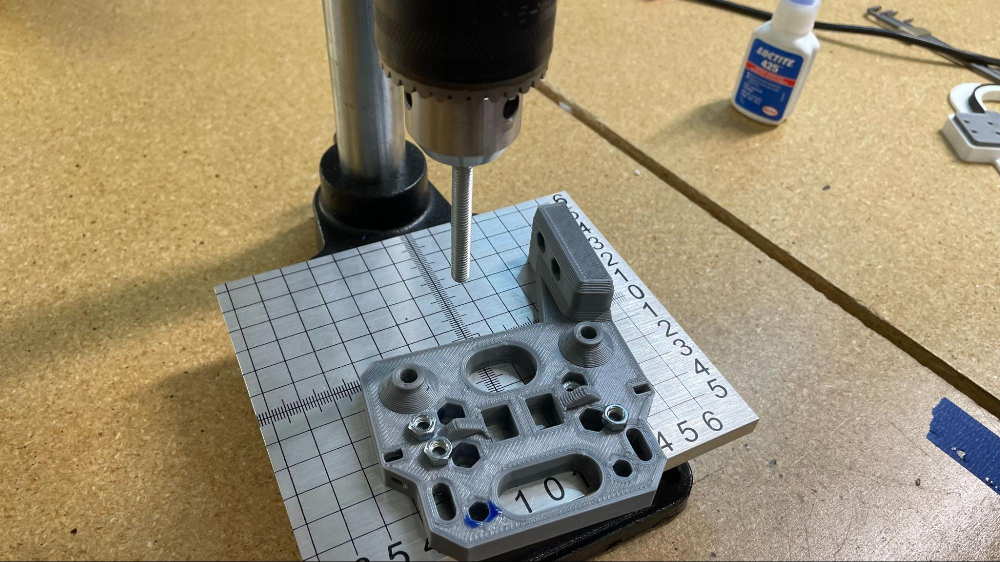
- If the pockets for the 2x hex nuts used for attaching the top-camera assembly loosely fit the hardware, use Loctite to prevent to secure them
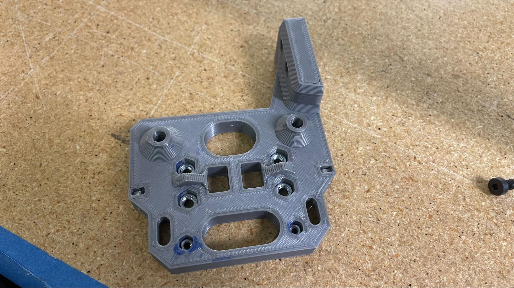
- Insert the 2x hex nuts used for tension adjustment deep into the print, stopping once the threads are fully visible from the intersecting bolt hole
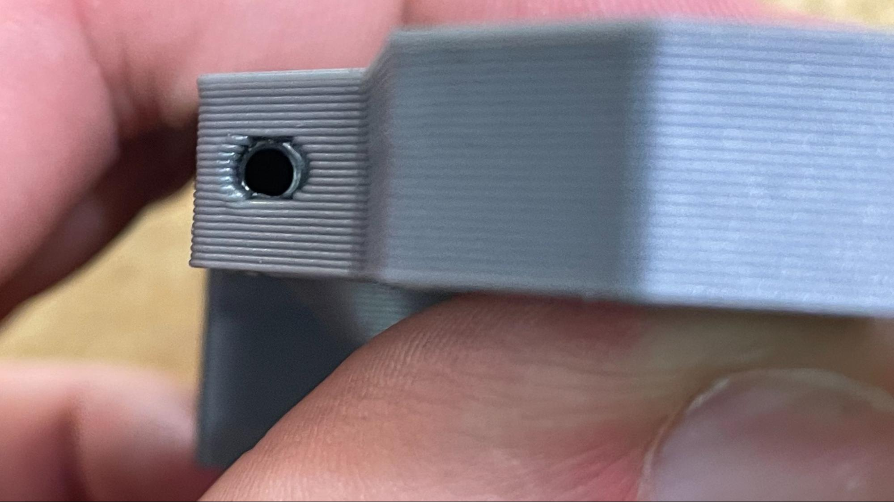
- Install tensioner bar onto x-gantry back
X-gantry-front preparation
-
Install hex nuts into x-gantry-front, being sure to utilize the x-gantry-front-nut-plate fixture when installing hardware into the backside of the print.
-
Press an M5 nyloc hex nut into the backside of x-gantry-front

- Install the 8x M3 hex nuts into the backside of the x-gantry-front, use a narrow tool to ensure that these pieces are fully inserted into the 3D print.
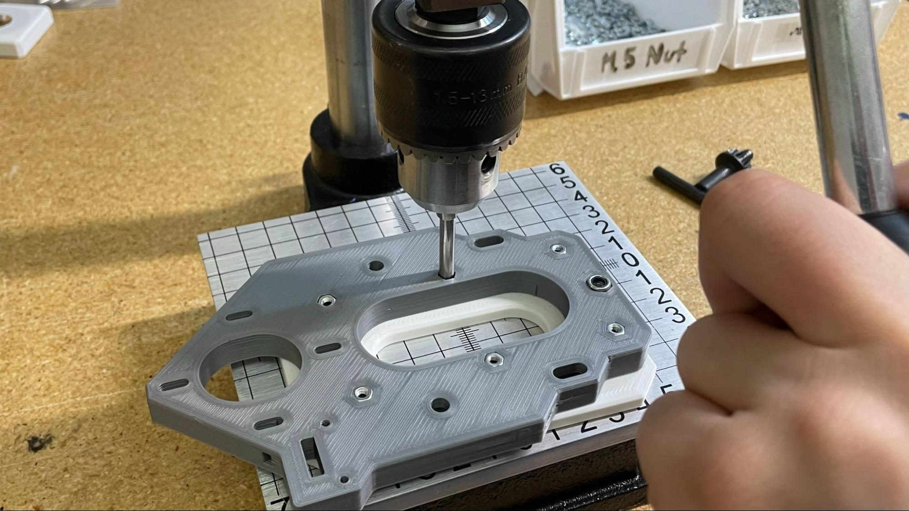
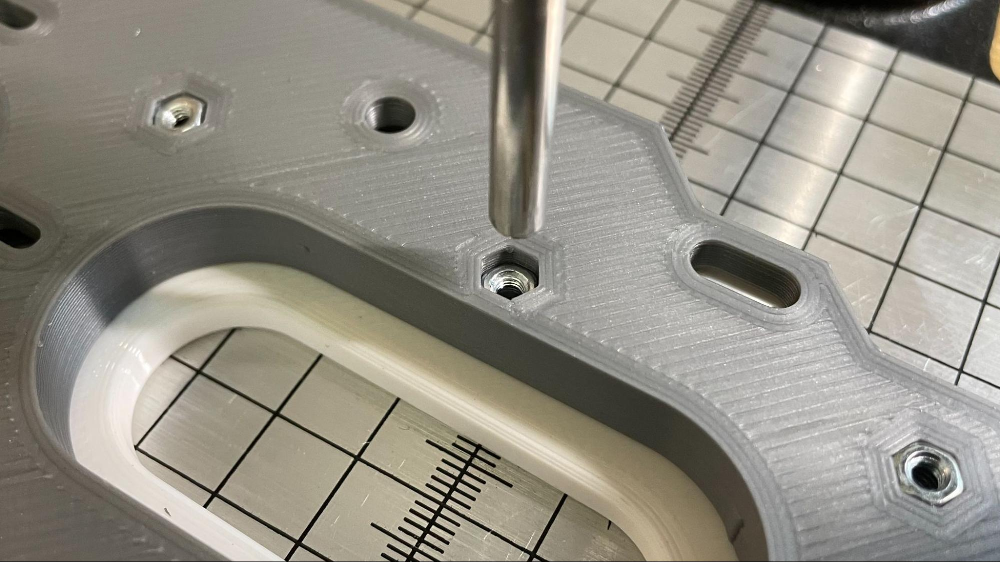
- Insert the 2x hex nuts used for tension adjustment deep into the print, stopping once the threads are fully visible from the intersecting bolt hole
- Install tensioner bar onto x-gantry-front
x-gantry-toolhead assembly
-
Install linear-rails by aligning them against the bumps on x-gantry-front
- Uses 3x M3x14 bolts per rail
- Tighten each bolt to 0.5 N/M


-
Install z-axis limit switch onto x-gantry-front
- Mounts with 2x M3x8 bolts and 2x M3 hex nuts on backside (should be already installed by now)
- Make sure each limit switch clicks and feels normal when actuated


-
Install idler-pulley onto x-gantry-front
- Use 1x M5x25 bolt and torque with a 4mm hex driver
- Check that the pulley can rotate freely without resistance
- Check that the pulley can only rotate - it should not be able to move up and down if the bolt is tightened correctly

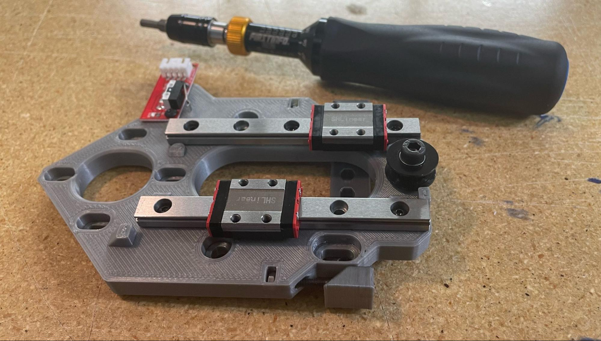
-
Prepare z-belt-subassembly
- Prepare z-gantry-backplate-left
-
Drill out the limit switch striker bolt hole on z-gantry-backplate-left with a 2.5mm drill bit

-
Install an M3x16 Flathead bolt into z-gantry-backplate-left to a depth that roughly matches the image shown below
- This screw depth will be precisely in later steps

-
Place a gt2-belt-loop onto the z-belt-alignment-jig
- Place z-gantry-backplate-left and z-gantry-backplate-right onto the z-belt-alignment-jig to align them correctly on the gt2-belt-loop
- Twist z-gantry-backplate-left upwards to pull the completed z-belt-subassembly off of the z-belt-alignment-jig
- Use a dull knife or other tool to push the gt2-belt-loop all the way down into the cavity of each z-ganry-backplate
-
Set timing-pulley height on NEMA 17 stepper motor shaft with jig
-
The 1st set screw tightened must contact the flat region of the NEMA 17 motor’s shaft
- Tighten both set screws to 0.4 N/M


-
-
Install NEMA 17 stepper motor and belts onto the x-gantry-front subassembly
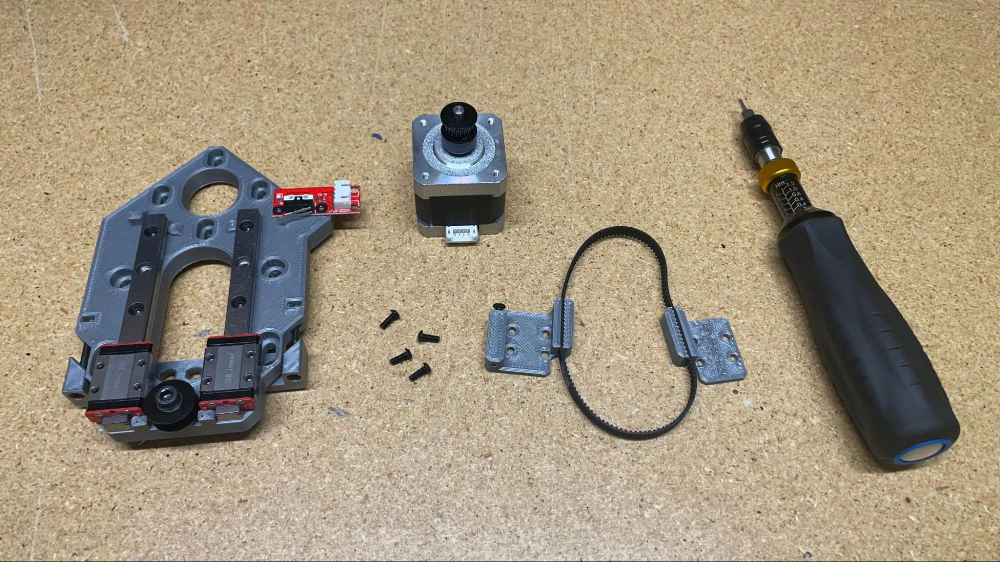
-
Begin by placing the gt2-belt-loop w/attached z-gantry-backplates onto the x-gantry-front subassembly
-
The z-gantry-backplate-right should fit over the right linear rail’s carriage, and the same goes for the left side

-
Install the NEMA 17 stepper motor by angling it into the belt-loop
-
The limit switch connector will be at a 45degree angle from the z-axis stepper motor’s connector when everything is in the proper position.

-
Bolt NEMA 17 stepper motor onto x-gantry-front with 4x M3x8 bolts
-
Leave the bolts loose for now

-
Tension belt-loop by pulling the stepper motor upwards before tightening its mounting bolts to 0.5 N/M
- The belts should feel much firmer now - to test manually move the z-axis back and forth while inspecting the belts for sag when changing directions
-
You should be able to pluck the belt like a bass string


-
-
Attach z-gantry-left and z-gantry-right onto each respective linear rail carriages + z-gantry-backplate with 4x M3x8 bolts per side
- Align each z-gantry to be parallel with the linear-rail by lightly pressing it outward with your hand, away from the mid-plane of the x-gantry-subassembly
- As these bolts are tightend ensure that the z-gantry doesn’t collide with the z-idler’s bolt head
-
Tighten bolts to 0.3 N/M, moving in a star pattern

- Align each z-gantry to be parallel with the linear-rail by lightly pressing it outward with your hand, away from the mid-plane of the x-gantry-subassembly
-
Prepare pneumatic-toolhead-assembly
-
Install a
nozzle-holderandrotary-pneumatic-adapterontoNEMA11-hollow-shaft-stepper- Use a torque driver w/custom
rotary-pneumatic-adapter-socketand 8mm wrench to tighten these components onto the motor shaft - Set the torque driver to
0.5 N/Mfor this step - Use the 8mm wrench to hold the
nozzle-holderstationary while applying torque from therotary-pneumatic-adapterside - The
rotary-pneumatic-adaptershould be installed closer to the motor's cable connector
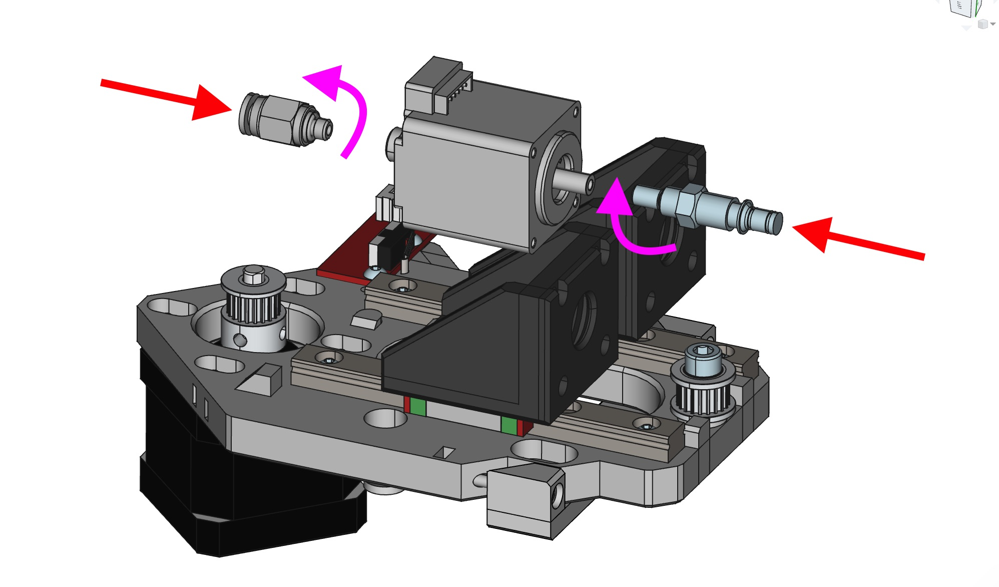

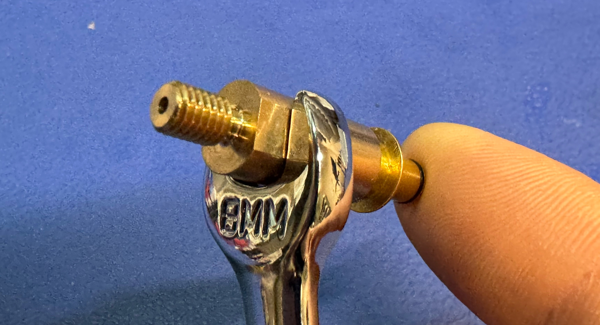

- Use a torque driver w/custom
-
Install 2x pneumatic-toolhead-assembly onto x-gantry-front-subassembly
-
Bolt pneumatic-toolhead-assembly onto left side z-ganty
- Attach with 4x M2.5x8 bolts
- Torque each bolt to 0.3 N/M
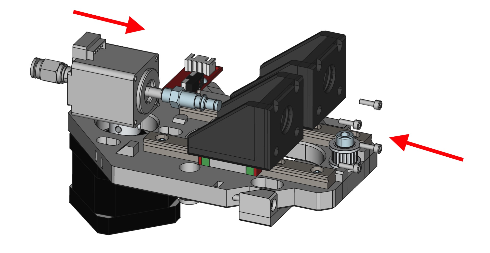
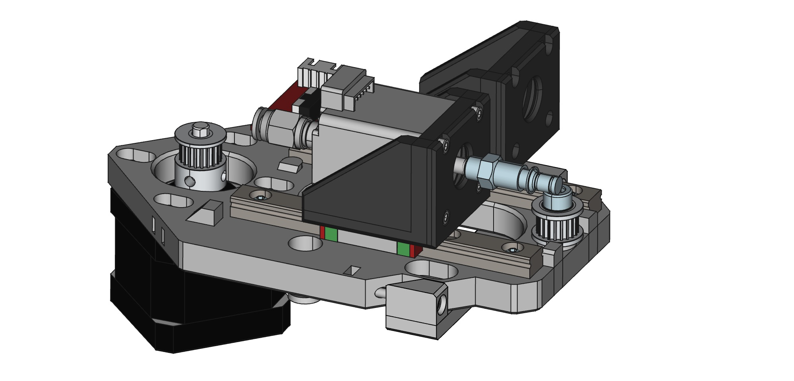
-
Repeat above process to attach a pneumatic-toolhead-assembly to the right side z-gantry
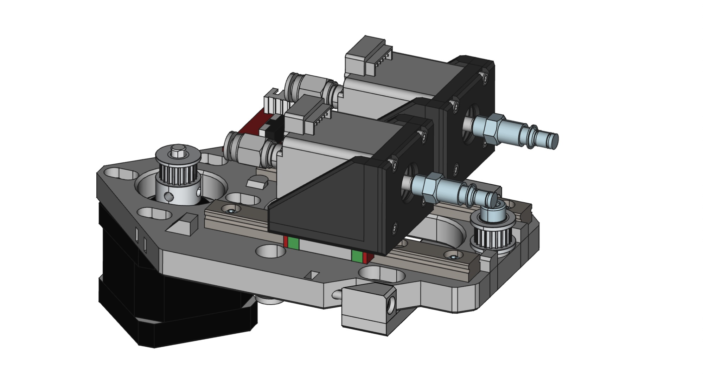
-
X-gantry final assembly
- Precut GT2 belt to ### length
-
Run gt2-belt through x-gantry-linear axis and connect both ends to x-gantry-back
-
Fully depress the x-axis belt tensioner arm before tightening down the belt with 2x belt-clamps with 2x M5x10mm socket head screws per clamp.
-
Use brass bar to route the belt through the extrusion and ends of the axis
-
Install x-gantry-front-subassembly onto x-gantry-linear-axis, connecting it to previously installed x-gantry-back
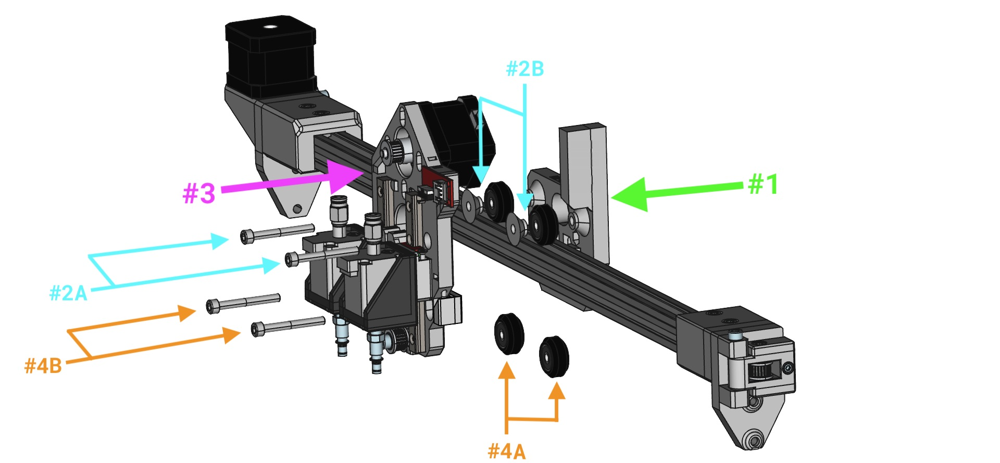
- Step #1 - Hold the x-gantry-back subassembly against the x-gantry-linear-axis subassembly for the following steps to happen easier
- Step #2A - Fully insert 2x M5x40 bolts through the upper counterbored M5 bores in x-gantry-front
- Step #2B - Happening basically simultaneously with the previous step, align 2x roller-space and 2x v-wheels onto the previously inserted M5x40 bolts
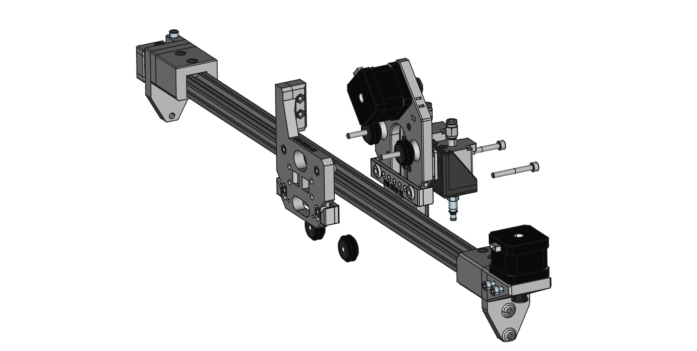
- Step #3 - Move the x-gantry-front-subassembly backward into the x-gantry-back-subassembly, paying attention to keeping the upper 2x v-wheels aligned on the x-gantry-linear-axis’s 2020-v-groove extrusion
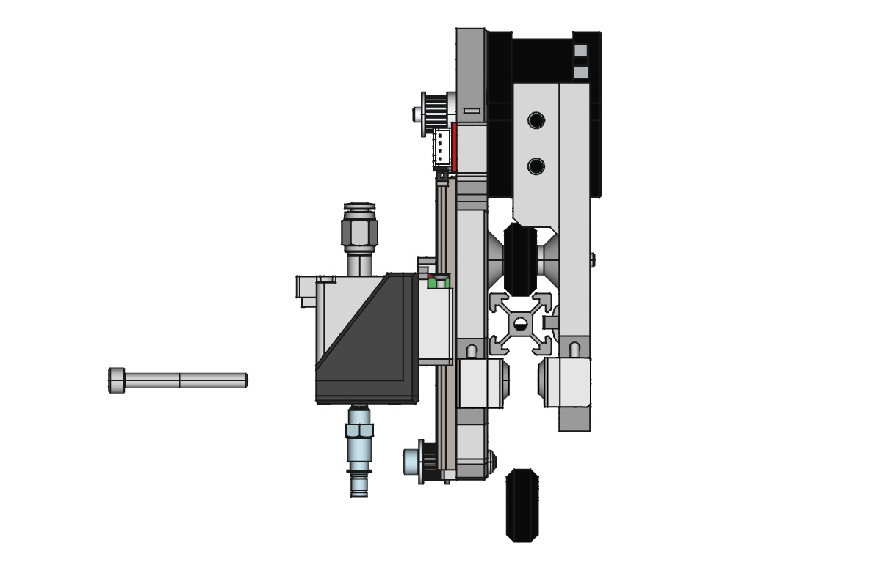
Note
Rotate everything upside down for the following steps
-
Step #4A - Lower 2x v-wheels up until they rest loosely against the 2020 v-groove extrusion, they should also each be aligned so that each wheel is concentric to the raised nubs on the x-gantry’s tensioner-bars.
-
Note that the 2x tensioner-bar pieces may not be vertically aligned very well by this point, so this process may be tricky
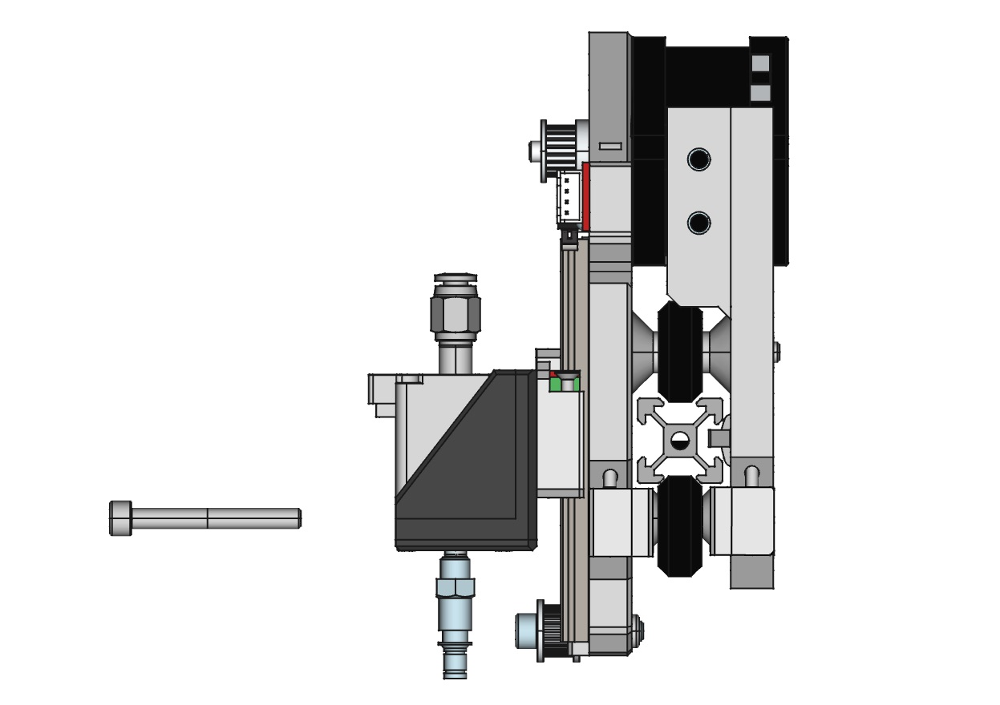
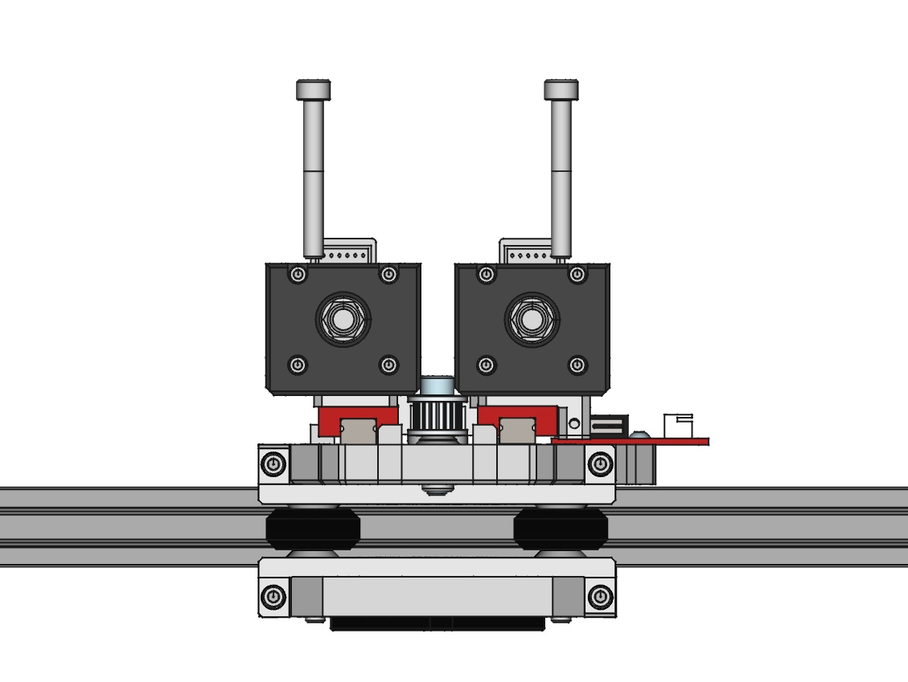
-
Step #4B -
-
Adjust the vertical alignment of the 2x tensioner-bar pieces
-
This is done by tightening or loosening the 4x M3x30 adjustment bolts until you can peer straight through the lower counterbored M5 bores in x-gantry-front and past the hex-nut slot found on x-grant-back
- This may take a few minutes so be patient!
-
Tighten and loosen all 4x M3x30 bolts as a set, taking care to never make a single bolt more than a few turns away from any other bolt
-
Fully insert 2x M5x40 bolts into the lower counterbored M5 bores in x-gantry-front, through both v-wheels, and stopping within two hex-nut slots found on x-gantry-back
-
Manipulate the z-gantry pieces as needed to avoid interference with the bolts
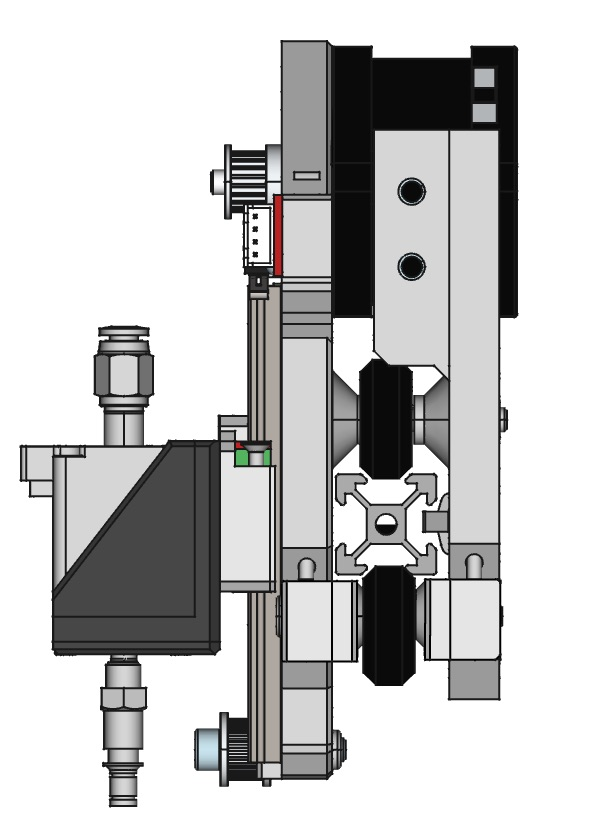
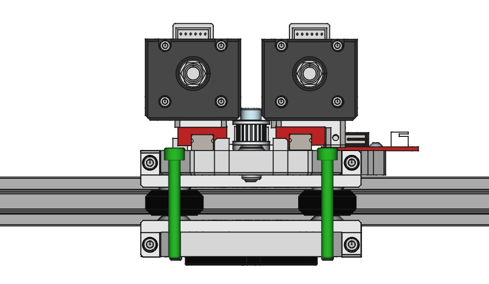
-
Tension x-gantry v-wheels and x-axis belt tensioner arm
-
Tighten the 4x M3x30 bolts until the toolhead-assembly can smoothly move along the x-gantry-linear-axis, without resistance
-
Grab the toolhead-assembly and try twisting it in many directions, if you feel any play or looseness tighten the appropriate M3x30 bolts until the play dissipates
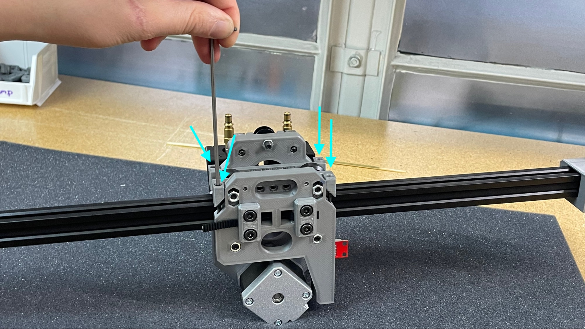
- Tighten the 2x lower M5x40 bolts to 0.1 N/M to lock-in the calibrated v-wheel tension
- Tension the belt to 0.03 N/M ** need to confirm **
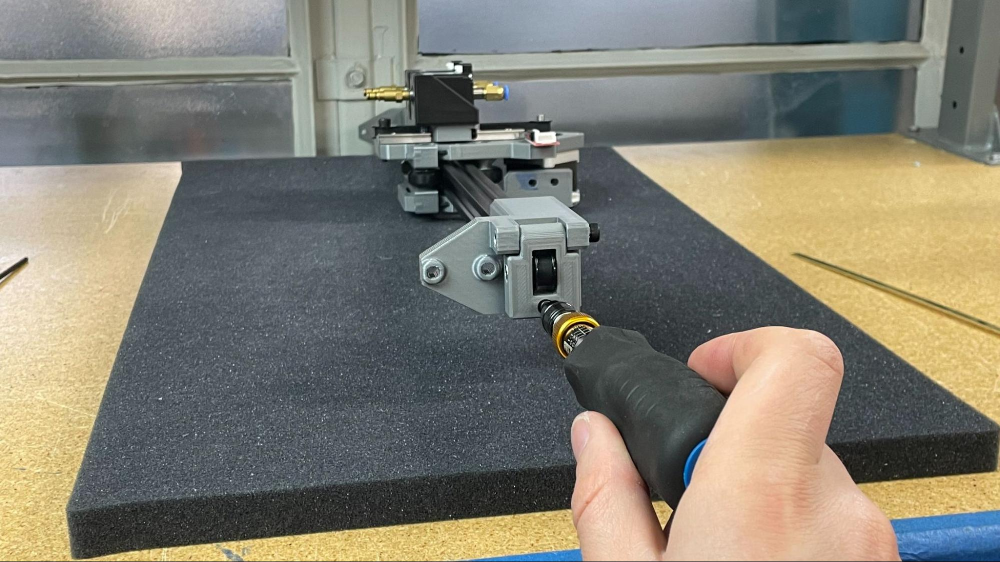
-
Test x-gantry on Gundam jig
- Ensure that the Gundam motherboard is unplugged from 24vDC power
- Check that the x-gantry fits correctly on the x-gantry-spacer-jig
- Slide a bolt into the x-gantry on either side of x-gantry-spacer-jig to prevent it from falling during testing
- Bolt down the test jig’s drag-chain onto x-gantry-back-subassembly with 2x M5x16 bolts
- Connect the test jig’s z-limit-switch, x-motor, and z-motor cables to the x-gantry being tested on the x-gantry-spacer-jig
- Connect the Gundam motherboard to 24vDC power and then press reset on the motherboard
- Connect the motherboard to the Gundam test software
-
Begin testing the x-gantry by running various macros
-
Check X-Home
- If the toolhead is moving very slow, the stepper drivers may not have initialized properly - try restarting the motherboard again
-
Check X-Movement Speed
- Ensure that no weird sounds are heard, if so consult with team for debugging steps
- Adjust the tightness of the belts and each tensioner-bar as needed to pass this test
-
Test Z-Home
- Check that the z-belt is adequately tensioned and adjust if necessary - you shouldn’t be able to twist the belt too much
-
Adjust the M3x16 bolt either up or down, if needed, provided the z-gantries are not aligned vertically after homing,
-
This can be checked by sliding a brass shim across the top of the motor while checking to see if it sits higher/lower than the top surface of the adjacent motor
-
Repeat this test and continue adjusting the M3x16 bolt until the alignment appears to be perfect
-
Test Z-Movement Speed
If issues arrise, continue rerunning tests and reworking the x-gantry
Once everything is passing, proceed with the following steps
- Remove x-gantry from Gundam
- Disconnect Gundam motherboard from 24vDC power
- Unplug the test jig’s z-limit-switch, x-motor, and z-motor cables from the x-gantry being tested on the x-gantry-spacer-jig
- Unscrew the drag-chain mounting hardware from the x-gantry being tested on the x-gantry-spacer-jig
- Remove the 2 M5x25 bolts used initially for keeping the x-gantry from falling off the x-gantry-spacer-jig
Install top-camera-assembly
-
Install top-camera and Light subassembly onto x-gantry
- Use two M3x14mm screws to mount the top-camera and Light subassembly onto the back of the X Gantry Back.
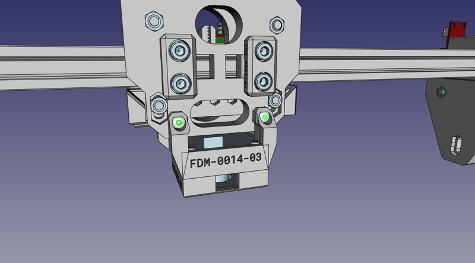
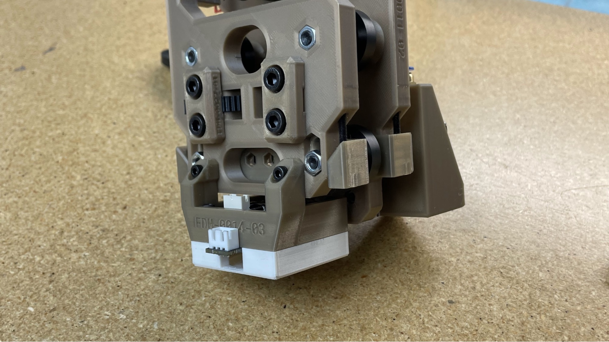
QC Checklist
Inspect the completed x-gantry for the following criteria:
GT2-belthas been trimmed to appropriate length (flush on 1 side, ~1/2" - 3/4" on the other)- Camera is installed with two bolts
- Camera lens cap is present
- The wire connectors on both
NEMA-11-stepper-motorunits face away from each other, sitting adjacent to their respective cable strain relief points - Each
nozzle-holderhas been lubricated and fit-tested with a nozzle Z-belt-loopfeels appropriately tensioned when plucked- Each
z-gantrymoves smoothly when actuated back-and-forth by hand - 2x
M5-hex-nutare installed inx-gantry-backfor use withdrag-chainattachment NEMA-17-stepper-motorwire connector faces towardsdrag-chainmounting location onx-gantry-backLinear-railis centered atopaluminum-extrusionx-idler-mountandx-motor-mountare secured to600mm-alu-extrusionwith 2xM5x10-boltper side- 2x
M5-hex-nutare installed inx-motor-mountfor use with thex-motor-cable-guide Tensioner-armis installed onx-idler-mountin the correct orientation (IE acorn-nut facing touches print)Timing-pulleyis tightened down and at proper heightGT2-beltlays flat and is roughly centered in the600mm-alu-extrusionchannelsGT2-belthas been correctly tensionedX-gantry-toolheadmoves smoothly when actuated back and forth by hand
If all checks pass, bring the completed x-gantry to the shelf for peer-review and pack-out.